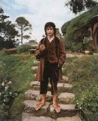
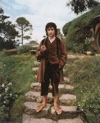

End of His Life
- Frodo destroyed the One Ring in Mount Doom with his friend Samwise.
- He departed from the Northern region of Middle-Earth and returned to the Shire.
- He recounted his adventures and completed his uncle’s book, A Hobbit’s Tale.
Explore the life and legacy of Frodo Baggins, the hobbit who saved Middle-Earth.
Frodo is a Hobbit who was born in the Shire, in Middle-Earth. Frodo was raised by his uncle Bilbo Baggins who was a very well-known and wealthy hobbit. Frodo lived with his uncle in a hobbit hole at the highest peak in Hobbiton.
Frodo was a very well respected hobbit in the Shire who had many good friends. Everything changed when his uncle left him with his old ring. This ring was the all powerful One Ring, forged by the dark lord Sauron in the fires of Mount Doom. At the age of 50, Frodo left the Shire and ventured to Mordor to destroy the One Ring.
 

Visit the Tolkien Society or The Lord of the Rings on IMDB to explore more about Frodo and his adventures.
You could say Frodo was extraordinary among hobbits.